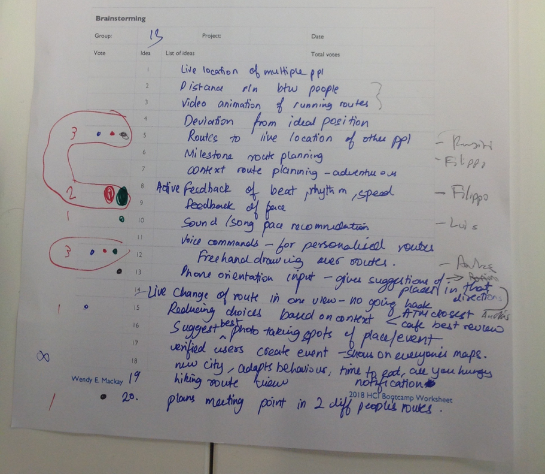
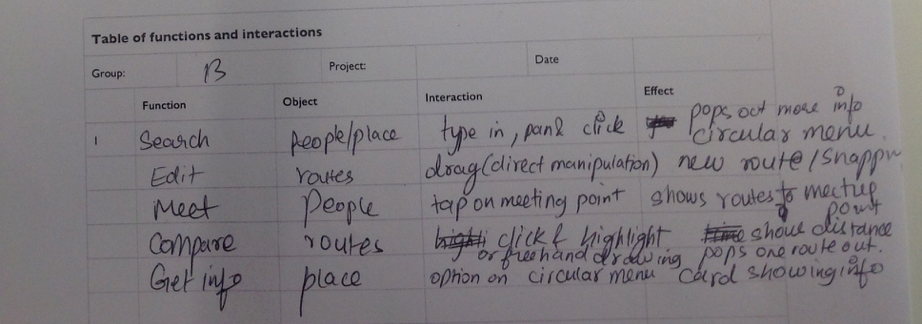

Redesign of a Maps Application

Design Bootcamp
Oct 2018
University of Paris-Sud
Redesign of a Maps Application
Oct 2018
University of Paris-Sud
I worked in a group with 3 other teammates and we conducted 8 interviews in the critical incident technique with users of Google Maps. Each interview took around 15 minutes and we asked the interviewee to narrate the last time they used Google Maps and break it down into details.
Figure 1: Interaction points to describe a scenario from each interview that describes a workaround or breakdown (user could not use the app as intended).
We listed all the breakdowns from the interviews in which the users couldn’t use the app as designed or came up with clever ways to overcome something that didn’t work for them. Then, we grouped the breakdowns intro major categories.
Based on the breakdowns listed above, we came up with a profile of a user who uses a map app frequently and wants reassurance along the way. We created a scenario of a marathon with road blockades. Three personas were created: a runner, running coach who wants to track the location of runners and a journalist who would like to navigate easily with voice commands.
Figure 2: User Personas based on the breakdown analysis.
Figure 3: Brainstorming of ideas to overcome the breakdowns and workarounds of the users whom we interviewed.
We searched for novel interaction techniques and found different types of menus (circular, marking, radial, dropdown), some solutions where users can mark spots on the route and the spots snaps to nearby roads. We came across an app called inRoute used for multi stop route planning, live weather update and search gas stations nearby. Google maps also has a lot of voice commands we didn't know about.
The design would help the personas draw and plan routes, find the way without looking at the phone and interact with other people on the way. Some main interactions we wanted to use were haptic feedback for directions (turn left or right, move faster or slower), circular menus on tap and marking menus in freehand drawing of routes
Figure 4: Novel interactions for users to interact with the map routes. We used the concepts of reuse, polymorhism and reification in the design process.
Figure 5: Functional table to describe how users would manipulate the functions associated with each object on the screen to achieve a goal.
We created a first prototype and showed it to 5 different users of Google maps and asked them for feedback and questions. We realised the following issues.
Then we improved the prototype and created a poster to indicate the updates in the design scenario and techniques.
Figure 6: Poster of the updated design scenario, interaction techniques and improvements
Video Prototype of a maps application which allows runners to plan, share and reuse routes.